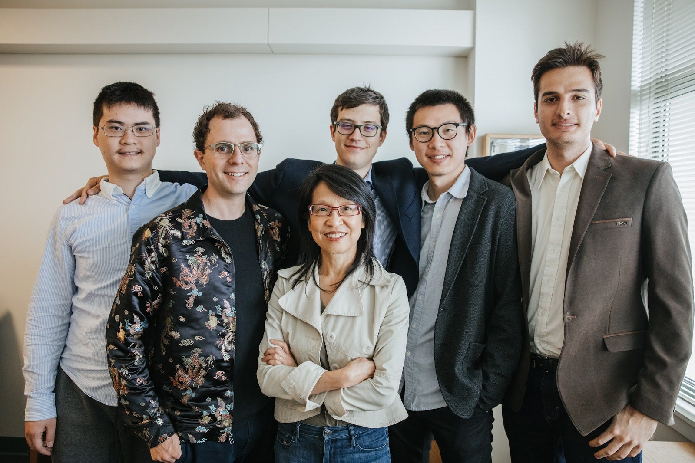
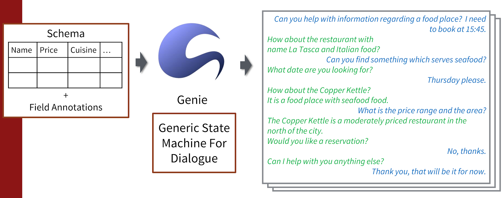
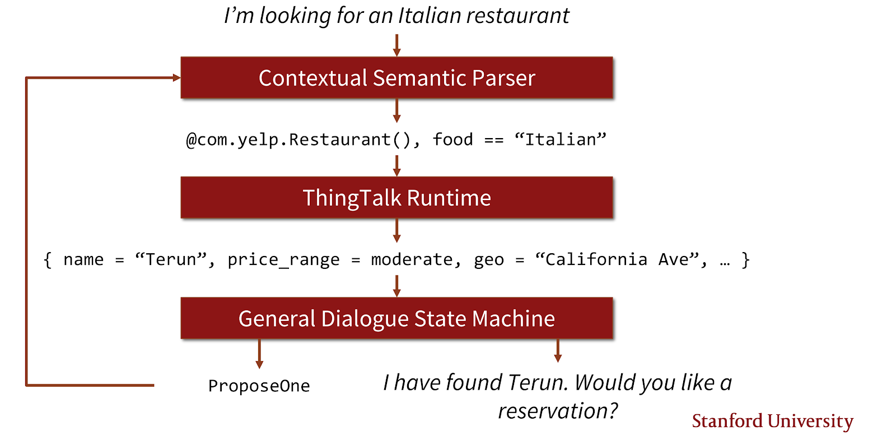
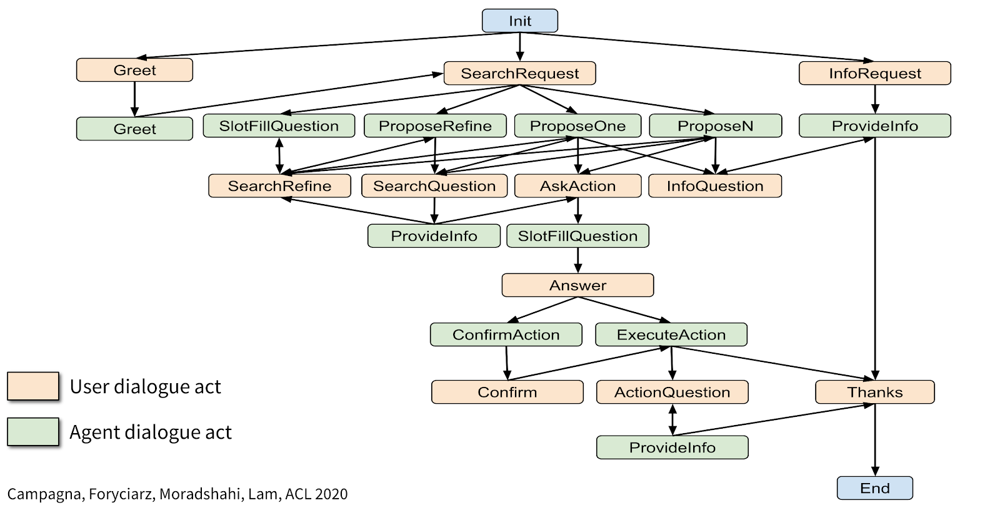

Whither Almond, the Stanford University open virtual assistant, will go?
Interview with Giovanni Campagna, one of the Almond principal developers

I learned of Almond, the Stanford University open virtual assistant, for the first time one year ago reading an article on voicebot.ai.
I have been immediately enthusiastic about the core concepts on which the project is based: the user’s data privacy, the need of a web based on linguistic user interfaces, the distributed computers architecture, the natural language programming approach and many others topics related to a possible next generation of the web, populated by a federation of humans and theirs personal assistants.
Soon I discovered that one of the principal developers of Almond software is Giovanni Campagna, a PhD student in the Computer Science Department at Stanford University and member of the Stanford Open Virtual Assistant Lab (OVAL) who works with prof. Monica Lam. Hence the idea of my interview with him, about the past and the future of Almond and personal virtual assistants.
Introduction to Almond
Giorgio: Ciao Giovanni! In order to sketch out what it is and what it will be Almond, may you briefly summarize the project history? The oldest public presentation I remember was by Monica Lam in fall 2018. May you give us the basic concepts of the project and explain what is the role of Almond within OVAL laboratory research?
Giovanni: The Almond project started in Spring of 2015 as a class project to explore a new, distributed approach to the popular IFTTT service. At the time, it was called Sabrina. Soon after, we realized the need for both a formal language to specify the capability of the assistants, and a natural language parser to go along with it, so end users could access those capabilities. The first publication for Almond, and the first reference under its current name, came in April 2017 at the WWW conference, where we described the architecture: the Almond assistant, the Thingpedia repository of knowledge, and the ThingTalk programming language connecting everything together.
Since then, we have been working on natural language understanding, focusing in particular with the problem of cost. State of the art NLU, used by Alexa and Google Assistant, requires a lot of annotated data, and is very expensive. We made two recent advancements: first, in PLDI 2019 we showed that using synthesized data can greatly reduce the cost of building the assistant for event-driven, IFTTT-style commands. Later, in CIKM this year my colleague showed how to build a Q&A agent that can understand complex questions over common domains (restaurants, hotels, people, music, movies, and books) with high accuracy at low cost.
In ACL this year, I presented how the same synthesized data approach can be used to build a multi-turn conversational interface, achieving state of the art zero-shot (no human-annotated training data) accuracy on the challenging MultiWOZ benchmark.
Most recently, we have received a grant from the Alfred P. Sloan Foundation to build a truly usable virtual assistant (not just a research prototype), and we hope to release it in 2021.
About Giovanni Campagna as researcher and developer
Giorgio: I’m curious about your personal history, Giovanni. I know you are Italian and probably you moved to Stanford as a PhD student. What made you start developing Almond? Did you initially work on Almond as part of your PhD thesis? Are you the leader of the software project development? And how is the team composed? Besides the Almond project, What is your current role in the OVAL team and what are your long-term research interests?
Giovanni: I moved to the US and to Stanford as a Master’s student, and I started Almond in class. I was interested in programming languages and pursuing the software theory concentration, which includes PL, compilers, and formal methods. I met Prof. Lam in her Advanced Compilers class. At the time, she was mainly focusing on messaging and social networks, with the goal of disrupting the Facebook monopoly (this was part of the Programmable Open Mobile Internet initiative, aka the Mobisocial Lab). But even then, she had the vision of what would come next, and while Alexa was not popular yet, it was clear that virtual assistants would be the next potential monopoly.
Personally, I started developing Almond as research on the ThingTalk programming language: designing a programming language that can enrich the power of the assistant beyond simple commands, and give the power of programming to everyone. Parallel to ThingTalk, I worked on converting natural language to code, because natural language is the medium of choice to make programming accessible. Our research found that neural networks are extremely effective for natural language programming tasks, as long as training data is available. ThingTalk is still the core of my PhD thesis, but over time we moved our focus to reducing the cost of training data acquisition.
I built the original version of the Almond assistant, and a large chunk of the current code, so in a way I am still the maintainer of it, but Almond would not have been possible without the help of my colleagues. These include Silei, Michael, Jackie, Mehrad, and Sina (all current PhD students). Silei was the first to join after me and he’s the second-most active dev on Almond. His research is mainly on Q&A over structured data. Michael recently defended his thesis; he was working on multi-modality: bridging GUIs and natural language. Jackie also worked on multi-modality, with a paper in UIST on mobile app interactions using natural language. Mehrad is working on multilinguality leveraging machine translation technology, as well as named entity recognition. Sina is working on Q&A over free text, paraphrasing, and error correction. Additionally, we have a number of MS and undergraduate students who have helped on various projects.
What is your view on data privacy and how this is related to personal assistants?
Giorgio: Data privacy is probably a foundation concept that gave birth to the Almond project. May you deepen why privacy is so important for all of us, citizens and companies? How is all this related to democracy and people’s freedom on the web?
One problem I see in current big player personal assistants is the fact that people’s data (voice conversations, also containing background ambient audio, e.g. at home) are processed by cloud systems proprietary platforms. In the best scenario, all this data is used to improve “AI-blackbox” cloud-based proprietary services, feeding machine learning algorithms. In the worst case, conspiracy theorists do suppose a malicious use by such companies that would steal personal end-user data populating people’s knowledge bases for any further commercial usage. Do you consider this last scenario an actual concern?
To protect privacy, in opposition to cloud-based “walled gardens”, Almond provides a tech architecture based on virtual assistants that can run on users’ devices. Do you think that the issue can be fully solved at the architectural level or do we need in any case government regulations?
Giovanni: This is not an easy question, and let me preface by saying this is my personal opinion, not the project’s. I think privacy is inextricable from freedom: I am not truly free if everything I do is tracked, logged, and stored forever by a company or government. I am not truly free if I can be judged in the future for anything I’ve done at any point in my life. One closes the blinds to be free to do whatever in the privacy of their home. And because so much of our lives is now conducted over the Internet, it’s clear that Internet privacy overlaps significantly with real life privacy.
Now, as you point out, virtual assistants and conversational AIs in general pose unique challenges to the privacy problem. First, state of the art natural language requires a lot of user data for training, which means the virtual assistant providers are continuously collecting all the conversations performed on the assistant, and have contractors continuously listening and annotating the data. To have somebody listen to my conversations, that’s not very private. Reducing the need for annotated real data has been a strong focus of our research, and we believe we’re finally getting there.
Second, and most importantly, virtual assistants inherently have access to all our data, through our accounts: banking, health, IoT, etc.. We want the virtual assistant to get access to our accounts because we want help, and we want the convenience of natural language. But what guarantee do we have that a proprietary service won’t suck all the data and use it for marketing purposes? Why wouldn’t a proprietary assistant provider look at our banking information to promote a credit card or mortgage product? Why wouldn’t a proprietary assistant look at the configured IoT devices to promote similar or compatible products? And with Amazon and Google dominating the online retail and ad markets respectively, it would be surprising if they did not eventually start doing that.
Tell me about your general vision on open-source software
Giorgio: I see that many Almond software components are made in Node.js and I know you have been a member of the Linux/GNOME community. Could you share your point of view about the importance of open-source software in general, such as the Linux operating system (I know you are a Linux desktop user, like me). How open source and open data are related to data privacy?
Giovanni: I have been an advocate of free software for a long time, and I am a strong believer of the four fundamental software freedoms as purely ethical principles. The freedom to study software is what allowed me to learn how to build software before I started college, and the freedom to modify and distribute software allows people to collaborate and build something bigger than any single individual could build.
I also believe that, unlike proprietary software, free software cannot abuse the trust of users. It is trivial to detect a free software app collecting more data that claims, or doing anything shady with the data. It is trivial to fork the app and remove any privacy-invasive functionality. Hence, free software communities are very careful to gain the trust of users and protect their privacy. You can see it for example with Firefox: while Firefox collects data for telemetry, they’re very careful to allow people to disable the telemetry, and do not collect more than they claim.
Giorgio: Why did you decide to develop Almond in Node.js? As nodejs developer myself, I’m specifically curious about the engineering reasons that drove you to use the Javascript environment. Is it an opportunistic matter, maybe because it is easy with nodejs to develop in multi-platform environments? Or are there other software engineering reasons?
Giovanni: I chose to build Almond in nodejs because it is the most portable platform. At the beginning, we had this idea that the full Almond assistant could run on web, phone (Android and iOS), desktop, embedded. Nodejs is the only platform that supports that. Over time, we found that running the assistant on Android or iOS is quite challenging, and we moved to an architecture where a user keeps the assistant running on a home server or a smart speaker. Yet, I still find nodejs more programmer friendly and just nicer to work with than the obvious alternative, Python. I should also note, using a type-safe compiled language would have been challenging, given the ever changing nature of a research prototype.
What do you mean by Linguistic Web?
Giorgio: Regarding Almond’s core concepts, I have been impressed by the statement “We are witnessing the start of proprietary linguistic webs” that I found in these Almond presentation slides. May you clarify what you mean by Linguistic Web? Are proprietary linguistic webs an implicit reference to Google Assistant and Amazon Alexa voice-based / smartspeaker-based virtual assistants? If so, what are your concerns in the “walled gardens” proprietary (virtual assistants) ecosystems and how Almond could be an alternative for private citizens and/or companies? What are strengths of open and non-proprietary platforms to improve (linguistic) democracy (and freedom) on the web?
Giovanni: That is exactly right: what we’re referring to is the third-party skill platforms being walled gardens controlled top-down by the assistant providers. Any company who wishes to have a voice interface must submit to Alexa and Google Assistant. As proprietary systems, these can shutdown competing services, or impose untenable fees.
We believe instead that every company should be able to build their own natural language interface, without depending on Amazon or Google. These natural language interfaces should be accessible to any assistant. One example of work in this direction is Schema2QA (to appear in CIKM 2020), a tool to build Q&A agents using the standard Schema.org markup. Any website can include the appropriate markup to build a custom Q&A skill for themselves, and furthermore the data is available to be aggregated across websites by the assistant.
Could you explain what Natural Language Programming is?
Giorgio: Could you define what LUI (Linguistic User Interfaces) and Natural Language Programming mean for you? With the popularity of smart speakers and current voice-first interfaces we are moving from the GUI (Graphical user Interface) to CUI/VUI (Conversational / Voice User Interfaces). One of Almond’s disruptive milestones is the idea that the final user must program himself his personal virtual assistant, just speaking with a computer in natural language. That’s currently an unachieved goal, in human-machine interfaces.
What do you think it will be, say in the next ten years, the way users will program their private virtual assistants? More in general, do you foresee that common people will interact with computers (and professional software developers will develop applications) in some sort of natural language programming?
Giovanni: To me, there is no distinction between LUI, CUI and VUI. Of course, language is conversational, and we expect the assistant to sustain multi-turn conversations, with follow-ups and error correction. This is by the way something that Alexa and Google do very well for their first party skills, but don’t really offer to their third-party skills, which get basic single-shot intent classification and perhaps simple slot filling. (In contrast, Bixby is another assistant that is built conversational from the start, and in many ways has a similar design to Almond). Note also that voice tech is mature and standard STT works really well.
Where things change is natural language programming. Ultimately, the goal of a virtual assistant is to use natural language to do things, and because the assistant is a machine, all it can do is execute code. So the idea is that every natural language command issued to the assistant can be mapped to an executable statement in a programming language (a domain-specific language, in our case ThingTalk). The job of the assistant then is just to execute the generated code and present the results to the user. Once you frame the assistant this way, the capability of the assistant is only limited by what the DSL can represent. For example, we experimented with a DSL of access control policies, and found it could be used to grant fine-grain access to shared devices and accounts (in Ubicomp 2018).
Which is the personal assistant end user experience, according to Almond vision?
Giorgio: Which kind of personal assistant user experience Almond provides to end users? It seems to me that Almond is built upon the task-oriented approach to automate everyday user actions/tasks (especially browsing/querying the web), following the IFTTT-like way (“alert me when the price of BitCoin is below $3600”). This approach reminds me of the Google Assistant mantra “To get things done” and that’s smart! This kind of personal-programmed micro-tasks completion feature is in fact pretty absent (or just hinted) in big players platforms such as Google Assistant and Amazon Alexa.
On the other hand, Google and Amazon provide some sort of general-purpose / not-personal basic question-answering and (news/ music) streaming services, referring to third party developers (Action in Google parlance / skills in Amazon parlance) for any other specific service.
May you deepen the key values and UX features that differentiate Almond from big players?
Giovanni: First of all, I want to stress, Almond is still a research prototype. It is an experimental platform to test our ideas, both in NLP and in HCI. We have received a grant from Sloan to turn the prototype into a truly usable product. As we do that, we imagine we will also focus on the most important skills: music, news, Q&A, weather, timers, etc. Yet, the technical foundation to support end-user programming will remain there, and we will try to support it going forward.
In terms of differentiating features, I imagine the key differentiator is really privacy, rather than UX. I imagine Almond will be supported on a traditional smart speaker interface, because that’s the most common use case for a voice interface. I also personally like using Almond on the PC, where we have an opportunity on the free software OSes. I’ve given a talk at GUADEC (the GNOME conference) recently about potential opportunities there.
Giorgio: What do you think about the big player server-centric (1st + 3rd party) information architecture, especially in terms of quality of service to end users?
Giovanni: Finally, because we’re fully open source, I think the distinction between first party and third party will be blurred in our assistant. We give the same technology to everyone, unlike Alexa for example which keeps AMRL (the Alexa Meaning Representation Language) only for first party skills. We imagine that even long tail skills will be developed in an open repository, and everyone will collaborate to build those skills.
The model should be similar to Home Assistant, a leader in the open-source IoT space, which is all built by the community.
About the NLP chain: LUINet, ThingTalk and Thinkpedia
Giorgio: Could you introduce the Almond natural language processing chain you conceived?
Giovanni: The key idea of our approach to NLU is to factor the domain-independent aspects of natural language from the specific domains. Our goal is to raise the level of abstraction, so that developers don’t have to build the same thing over and over again. Instead, we want developers to specify their APIs and database schemas, with a few bits of natural language on every field. We then use a general state machine of dialogues and a general grammar of English to synthesize millions of dialogues that talk about the domain of interest, which we train on. The tools to build these synthesized datasets for training are part of Genie, which is the core NLP technology backing Almond. In diagram form:

At inference time, this is what the agent does:

Our pipeline uses a neural semantic parser (the LUINet model, based on the BERT-LSTM architecture) to understand the input sentence, and maps it to an executable form in the ThingTalk programming language. The ThingTalk code makes use of primitive APIs defined in Thingpedia, such as the Yelp skill in this example. The code is JIT compiled and executed, and returns the results. The results are then passed to a general dialogue state machine, that, given the AST of the executed code, the results, and annotations on the APIs, is able to generate both the new formal representation of the dialogue, and the agent’s utterance.
Here is the state machine at a glance:

The interesting aspects of this state machine is that it does not depend on the particular domain of interest. So the same state machine can be used for restaurants, movies, music, etc. The state machine is built once and for all, and new domains can be plugged with very little cost. Additionally, when the state machine is refined to add new features, the refinements are shared across all skills. This is also a way in which all skills are “first-party skills”: all skills benefit from the work done to improve other skills, when that work is not domain-specific.
About the technology behind the Almond NLP chain
Giorgio: The work you made with LUINet, Genie, and all other components is impressive! It seems to me that you followed the “classic” semantic parsing approach where natural language statements are translated to a formal language (ThingTalk). The semantic parsing approach makes absolute sense for me, maybe differentiating itself from currently very popular intent-based probabilistic classifiers approach, used by Google (Dialogflow), Amazon (Lex) and many other NLU (Natural Language “Understanding”) platforms available on the market.
Could you deepen how the Almond approach differs from the intent-based classifiers? What are pros and cons of these different approaches?
Don’t you think that in the long term the intent-based machine learning could be a simpler way to let the assistant learn (”retrain”) new user intents/requests? On the other hand, in the long term, the Almond NLP formal language production would win in terms of AI explainability in a possible “machine reasoning”. What do you think about it?
Giovanni: First, let me clarify that when we say semantic parsing, we mean neural semantic parsing, rather than classic semantic parsing. Classic semantic parsing is template or grammar based, and tries to match spans of the sentence to specific primitives in the knowledge base.
Neural semantic parsing instead has a lot more in common with machine translation: a sentence is fed to a neural network, and the neural network outputs a program, token by token.
That makes neural semantic parsing a super set of intent-and-slot systems: intent-and-slot are similar to semantic parsing, where the target language has a single function call with parameters.
The neural semantic parsing approach is more general, because the target language can be any formal language, and need not match the sentence exactly, nor it needs to be limited to only one API call. For example, semantic parsing allows us to translate questions to SQL-like statements with joins, projections and filters, instead of hard-coded API calls, which allows us to better understand complex questions.
The downside is that neural semantic parsing requires more data to train, which, if annotated by hand, must be annotated by an expert. Building a semantic parsing training set by hand is practically infeasible: the closest that has been built are dialogue state tracking datasets such as MultiWOZ (which are known to have annotation problems) or paraphrase-based datasets such as Overnight, WikiSQL and Schema-Guided Dialogues (but performance on paraphrase is known to overestimate performance on real data). On the other hand, Genie allows us to use synthesis for the training set, and only annotate a small amount of data for evaluation, which makes semantic parsing practical again.
I imagine long-term all assistants will move to semantic parsing. Note for example that Alexa is also using some form of semantic parsing (through AMRL) for first-party skills. Intent classification is too limited in what kind of sentences are understood.
Genie also differs from other assistants in how it approaches state tracking (carrying over state across multiple turns). While commonly used tech separates NLU and state tracking, Genie combines both problems into a single neural network. This reduces the problem of “unhappy paths” typical of rule-based state tracking, where all the different ways the user might continue the conversation or change the subject have to be modeled explicitly.
The rule-based state machine is still imbued into the neural model using the state-machine based synthesis, but the neural network can generalize beyond it. In our experiments on the MultiWOZ dataset, we found the state machine could cover 83% of turns, but the neural network could still interpret correctly 47% of the remaining 17%, hence generalizing in what state transitions are supported by the agent.
See paper: State-Machine-Based Dialogue Agents with Few-Shot Contextual Semantic Parsers.
Will ThingTalk evolve from a smart commands interpreter to a full “conversational companion”?
Giorgio: I see ThingTalk, the Almond natural language programming language inspired by IFTTT, as the first attempt to implement a general natural language programming. Using ThingTalk you can set-up in natural language some “actions’’ triggered by external (web APIs/local) events (e.g. “When I use my inhaler, get my GPS location, if it is not home, write it to a log file in Box.”).
Does ThingTalk also include any personal-facts continuous learning and a personal knowledge base memory?
Do you have any news about how Almond could eventually evolve into a general-purpose personal “conversational AI”, able to sustain multi-turn conversations, not only in event-based task-completion contexts, but maybe also in companion-like open-domains / chit-chat dialogs?
Giovanni: This is absolutely on our radar. First of all, we’re partnering with Chirpy Cardinal, another Stanford project who won second place in the Alexa Social Bot Challenge. In the near future, we will integrate Chirpy Cardinal into Almond for companionship and chit-chat capabilities.
We also imagine that the assistant will learn the profile of the user, their preferences, and will have memory of all transactions, inside and outside the agent. We do not have any released work on this yet.
About stateful and contextual dialog management
Giorgio: In general, one topic I’m personally obsessed with is how to program multi-turn chatbot dialogues, in contextual (closed/open) domains. That’s a goal not yet achieved by Google and Amazon cloud-based assistants. To date, in fact, both the famous systems surprisingly do not maintain dialog context in multi-turn conversations even on a simple domain as weather forecasts. The lack of context is not just related to conversational domain, but also to the “time”. Namely, the above mentioned voice assistants are not able to remember pretty anything about a previous interaction with a specific user. No memory (“stateless”, if we think about a conversation as a state-machine workflow). Worst, there isn’t any incremental learning by conversations.
Now, in what directions do you think conversational technology will evolve? Personally, I foresee a next generation of personal assistants that will be able to sustain task-based / closed-domains dialogs (say in the ThingTalk way) and to chat about general open-domain knowledge. The basic personal assistants feature I do not see yet in any state of the art chatbot is the ability to understand and reason about personal user facts. Do you agree with this view?
Giovanni: I think state of the art assistants will grow conversational capabilities for task-oriented skills very quickly. Some, like Almond and Bixby, are built to support multi-turn from the start. Others, like Alexa, will require re-engineering for multi-turn, but they will get there very soon. See also Alexa Conversations as an emerging technology for multi-turn, multi-skill experiences.
Incremental learning is a much more open-ended area. There is a large body of work in this space, starting with LIA, the “teachable” assistant from CMU. I also imagine the assistant will grow a profile of the user, both by data mining on the conversation history and by explicitly tracking a KB of the user’s information. In a sense, this is already available: the assistant knows my contacts and family relations, it knows my location, it knows my preferred music provider, etc. It will only grow over time as more features are added.
Giorgio: BTW, what is your opinion about any practical usage of “statistical web-crowd-sourcing” (my definition) in systems like Generative Pre-trained Transformer 3 (GPT-3), the auto-regressive language model that uses deep learning to produce human-like text?
Giovanni: Pretraining is at the core of the modern NLP pipeline, whether it’s masked-language-model “fill in the blanks” pretraining (BERT and subsequent works), generative pretraining (GPT 1, 2 and 3) or sequence-to-sequence (T5, BART). It is key to understand language, because it can be trained unsupervised, so it has significantly less cost than supervised training. I can only imagine the use of pretraining will grow over time. As for GPT3 specifically, the few-shot results are honestly impressive on a range of tasks. At the same time, the model is so large that it cannot be easily fine-tuned, so it’s quite difficult to apply it to a downstream task.
Giorgio: About closed domain vs open domain chatbot building, what do you think about RASA (the open-source opensource engine to build contextual assistants) approach?
Giovanni: What RASA is doing is quite interesting in that they’re also trying to push the envelope of conversationality, and they also recognize the limit of intent-based systems. At the same time, I see their current NLU product is still using a classic intent-based dialogue tree. Their dialogue manager requires fully annotated examples of conversations, which are incredibly hard to acquire and annotate well. But I’m looking forward to new stuff, when it becomes available!
The Distributed ThingTalk Protocol and the Federated Virtual Assistants Architecture
Giorgio: One of the things I love more of Almond is the vision of a next generation web made by a network of federated (Almond based) virtual assistants. As far as I understood, in this model each person would have a virtual assistant acting as a virtual secretary and talking with other people-clones assistants or people directly. The virtual assistant would act as a “programmable interface”, managing “access control” and sharing personal info based on dynamic programming made by users themselves. That is, in my opinion, very powerful and disruptive! May you explain this concept and could you give us some technical implementation architectural details?
Giovanni: I think your question summarizes it very well. The idea is that every person would have their personal virtual assistant running on their own trusted device. The virtual assistant executes requests on behalf of the owner, and on behalf of others, with access control. The requests are represented in ThingTalk and exchanged over a messaging protocol; in our prototype, we used the Matrix messaging protocol. The access control policies are also represented in ThingTalk. Access control is enforced using Satisfiability Modulo Theory, so the access control is formally verified. I recommend looking at our Ubicomp 18 paper for further technical details.
The interesting thing of this work though was noting how useful fine-grained access control would be: in our user study, we found that across 20 scenarios, the willingness to share data and accounts would double with fine-grained control. We also found that our access control language covered 90% of the enforceable use cases suggested by crowdworkers.
On which devices Almond will run: smartphones, smart-speakers, personal computers?
Giorgio: I know you spent a lot of energy trying to run Almond on a vast range of personal computer platforms, focusing on the Android app as a common “personal computer”, maybe because smartphones are the personal computers in this era, for common people. Beside, one of the possible weaknesses I see in Almond is the absence of a (home-based) voice-based interface, maybe through an open-hardware smart-speaker? Do you have any plan to allow private citizens to interface Almond through smart-speaker or any voice-based platform? What are pros and cons of voice-first interfaces?
Giovanni: We absolutely see Almond on the smart speaker as a first class citizen. Since fall of 2019 we have partnered with Home Assistant to bundle Almond as an official add-on, so you can use Almond to control a Home Assistant-based smart speaker. That means one can build a fully open-source voice assistant stack using a Raspberry Pi, Home Assistant OS, and Almond. There are a couple challenges in using Almond with a pure voice interface, mainly around the wake word, for which there is no easy to use open-source solution. (Recently, we discovered Howl from UWaterloo, which is also used by Firefox Voice, and we’re investigating that). Also, building a conversational interface that is friendly to pure speech output is not easy. Even commercial assistants work better on a phone when they can display links, cards, and interactive interfaces.
Could the Almond federated architecture be also a solution for business companies?
Giorgio: A distributed architecture of virtual assistants (where each end-user has his local assistant) that allows people to tune a fine-grained access control, selecting what info is public and what actions external assistants (aka people) can access to, seems to me a breakthrough in the current debate on personal data sharing.
BTW, You may know that Tim Berners-Lee in 2018 announced to be working on a personal assistant (code-name: Charlie). “Unlike with Alexa, on Charlie people would own all their data”. Are you in touch with him or any people at Inrupt?
Giovanni: I know that Monica has spoken with Tim Berners-Lee in the past. In any case, I believe this space is quite young, and there is certainly an opportunity for multiple open-source projects who focus on different aspects of the stack. Our focus is really in the NLP and dialogue management, while their focus seems to be the distributed architecture.
Giorgio: Almond seems now focused on providing an assistant to private citizens (end private users). The distributed architecture and the access control management you propose for end private users couldn’t be applicable also to business companies that want to provide their services to people? I imagine a scenario where an end user’s assistant talks to a company-assistant. May this Almond possible extension in the future be coupled with Thingpedia APIs?
Giovanni: Of course! The goal of our research prototype of a distributed virtual assistant was to show how useful access control can be in natural language. The use cases need not be limited to consumer access control: it could be applied in corporate settings, and it could be applied to sharing data between consumers and businesses. For an example of the latter, see this paper from HTC & NTU which uses ThingTalk technology to audit sharing of medical data.
First European Open Virtual Assistant Workshop
Giorgio: In June 2020, the First European Open Virtual Assistant Workshop scheduled by OVAL was cancelled due to the COVID-19 outbreak. The goal of the workshop was to introduce OVAL lab’s open, federated and privacy-preserving virtual assistant to the European research and business communities. There is any plan to reschedule the workshop?
Giovanni: Unfortunately, as you can imagine all in-person events have been canceled for the foreseeable future due to COVID-19. I don’t know at this time when the workshop will be rescheduled.
Giorgio: In general, what do you think about the recent European citizens’ privacy-preserving initiatives and related supporting laws (see GDPR regulations, the recent GAIA-X project and, specifically regarding personal assistants, the Fraunhofer SPEAKER platform)? Do you see common points between current European policy on “data sovereignty” and the Almond goals?
Giovanni: I think European efforts in this space are very important in terms of raising awareness of the importance of privacy. Building effective alternatives to the Amazon / Google duopoly is one way to restore privacy, like we’re doing with Almond.
At Almond, we’re also collaborating with the AI4EU initiative, which aims to build an European cloud of AI infrastructure.
At the same time, on a purely personal basis, as an European citizen with an opinion, I often disagree with the choices of our Commission, which seems to be animated more by economic strategy (and fear of American competition) than by sincere values. The goal should be privacy for all, not just making sure the next Google pays European taxes.
Often, it is also difficult to assess certain projects, because there is no open-source code, no released product, not even a development version. We see a lot of press releases and reports, but there is no sense of a coherent software artifact, accessible to developers. Even for the two projects you linked, development has reportedly started, but there is no code accessible anywhere. To me, and I stress this is a purely personal opinion, this is not the way to run a successful open source initiative.
How do you see the future of Almond?
Giorgio: Recently Almond received Sloan Support. As far as I understand, the new funds will support the engineering of Almond solutions, with the goal to convert the developed prototypes into real products usable by consumers.
May you give more details and describe the next steps of the project, in the short term and in long-term (say next 5 years)?
Giovanni: The short term goal, in the next year, is to use the funds from Sloan and other foundations to build an initial product. We aim for a small initial user base of enthusiasts who care about privacy.
The long term goal is then to use this initial product to further fund raise, and then use the established product to build both a successful open-source community, and an ecosystem of companies using Almond technology in their products. This should allow Almond to thrive and become self-sustainable.
Recent Talks (2020)
Almond: An Open, Programmable Virtual Assistant
Giovanni Campagna, GUADEC, the GNOME Conference, ORBIS 2020,
July 24, 2020.
Building the Smartest and Open Virtual Assistant to Protect Privacy
Monica Lam, Stanford Online Seminar, April 9, 2020.
Links
Giovanni Campagna home
Almond project home
Stanford Open Virtual Assistant Lab
Open Virtual Assistant Initiative Wiki
Almond Community Forum
Almond open-source repositories
How to contribute to Almond
Updates:
september 22th 2020: in paragraph “About the technology behind the Almond NLP chain” the answer has been integrated, inserting the link of a new paper.
Originally published on Medium.